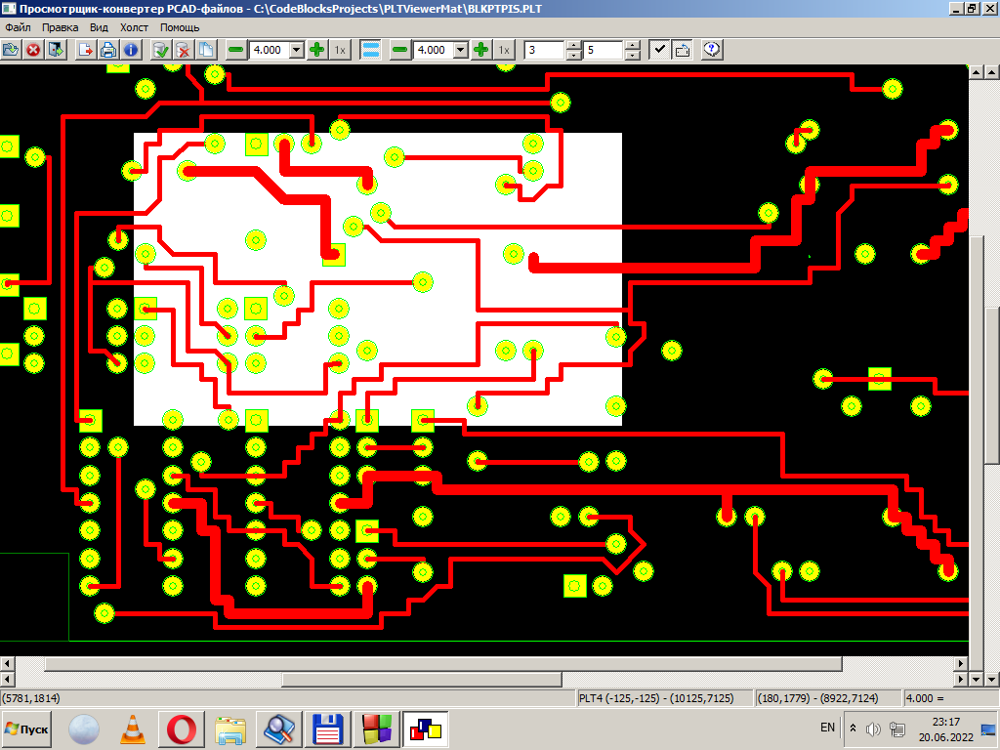
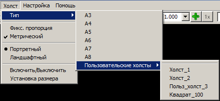

Так может выглядеть включённый холст (белый прямоугольник) на фоне выводимого изображения.

Холст - специальный инструмент выделения, позволяющий выбрать регион и/или набор графических примитивов для последующих операций над ними. Собственно, таких операций пока три - копирование в буфер обмена операционной системы, экспорт и печать. Кроме того, он представляет собой наглядный образ какой-либо подложки (например, бумажной форматки или листа фольгированного стеклотекстолита), на котором можно тем или иным способом разместить печатаемые (или экспортируемые) элементы изображения.
Холст очень напоминает обычную прямоугольную рамку выделения, но работа с ним в специфических условиях программы более удобна. Благодаря возможности точного контроля над размером и положением холста пользователь получает возможность выполнять высокоточную печать (а также вывод в растровый графический файл или буфер обмена) каких-либо фрагментов PCAD-изображения.
Управление холстом может выполняться рядом способов: через пункт главного меню "Холст", двумя специальными полосами прокрутки, блоком органов управления на полосе инструментов, а также клавишами управления курсором при удержании Ctrl. Управление холстом заключается в установке его положения, размера и ориентации.

Размер может быть стандартным (его можно выбрать из ряда A3-A10) или произвольным. Выбор желаемого размер холста выполняется следующим образом: через подменю "Холст/Тип" доступны стандартные типы холста, а также набор определённых пользователем холстов переменного размера. Максимально возможное количество пользовательских холстов - 25. Для того, чтобы получить возможность их использовать, все их требуется предварительно настроить (указать размер) посредством специального диалога "Установка размеров холстов", который вызывается пунктом меню "Холст/Установка размера".
Еще один способ указать размер холста - два соответствующих числовых поля ввода на полосе инструментов. Там его можно ввести непосредственно, в тех единицах длины, которые установлены в качестве текущих в вышеупомянутом диалоге "Установка размеров холстов".
Еще один параметр холста - его ориентация. Она может быть портретной (если высота холста больше его ширины) или ландшафтной (в том случае, если соотношение высоты и ширины обратное - ширина больше высоты). Выбор ориентации холста можно осуществить пунктами меню "Холст/Портретный" и "Холст/Ландшафтный", а также переключателем на панели инструментов. При переключении ориентации холста его размеры остаются неизменными.
Наконец, вне зависимости от размеров, ориентации и положения, холст может быть включён или выключен. Его активация/деактивация выполняется пунктом меню "Холст/Включить/Выключить" или соответствующим переключателем инструментария.
При включённом (выведенном на экран) холсте он отображается в поле просмотра рисунка в виде прямоугольной белой подложки, на фоне которой выводится текущее изображение. В этом режиме положение холста указывается и управляется вторыми по счёту полосами прокрутки, независимо по горизонтали и вертикали. Кроме того, положение холста относительно рисунка можно менять и клавишами управления курсором, если одновременно удерживать при этом клавишу Ctrl.
Ещё одна особенность поведения холста состоит в том, что при изменении масштаба основного изображения холст не масштабируется, Его физический размер всегда остаётся неизменным, равным установленному в определённых абсолютных единицах длины. Масшатбирование рисунка изменяет его физический размер (в том числе размер его разнообразных "твёрдых копий" на бумаге при распечатке или в виде графических файлов при экспорте), а физический размер холста-подложки при этом всегда остаётся постоянным, таким, каким он был установлен для масштаба 1:1. В этом его существенное отличие от другого инструмента выделения - рамки выбора (ограничительной рамки).
Включённый холст может ограничивать графические примитивы, которые будут направляться на выход при выполнении экспорта в векторные графические форматы. В этом случае в формируемые файлы попадут только те геометрические элементы, описанный прямоугольник которых имеет непустое пересечение с прямоугольником холста.При выполнении печати, копирования в буфер обмена или экспорте в растровые форматы холст может служить ограничителем региона изображения, который будет растеризован и отпечатан, скопирован в буфер или сохранён в экспортный файл. Для такой операции картинка, выведенная на печатающее устройство или в файл будет точной копией того изображения, которое будет находиться в площади холста на момент выполнения действия.